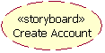
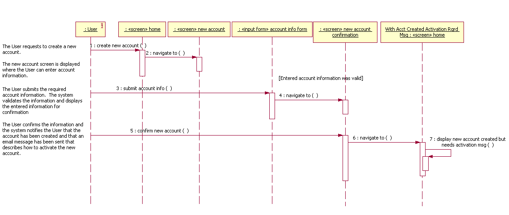

| Рекомендация: User-Experience Storyboard |
 |
|
| Связанные элементы |
|---|
IntroductionThese guidelines include modeling recommendations for User-Experience Storyboards. A User-Experience Storyboard describes a specific Use Case in terms of User-Experience Elements. If a Storyboard exists for that same Use Case, that Storyboard should be taken into consideration when developing the User-Experience Storyboard. Process OverviewThe following is an overview of the process for developing a User-Experience Storyboard:
Modeling the User-Experience StoryboardUser-Experience Storyboarda are modeled as UML collaboration instances with the stereotype, <<storyboard>>.  If explicit traceability is desired from the User-Experience Storyboard to its associated Use Case, a realization relationship can be drawn from the User-Experience Storyboard to the Use Case. See Guideline: User-Experience Model for information on traceability between the User-Experience Model and other system models. User-Experience Storyboards contain interaction diagrams (flow diagrams) and class diagrams (participants diagrams). For more information on modeling these diagrams, see the Modeling the User-Experience Storyboard Flow Diagram(s) and the Modeling the User-Experience Storyboard Participants Diagram sections. For specific consistency rules that should be maintained between these diagrams, see the "Diagram Consistency Rules" section of Checklist: User-Experience Storyboard. The User-Experience Storyboards should reflect the guidance provided in project-specific guidelines. Identifying the Participating ElementsFor information on identifying User-Experience Elements, see Guideline: User-Experience Element. Describing the User-Experience Storyboard Flows of EventsThe User-Experience Storyboard flows of events describe how the Use Case is performed by the User-Experience Elements. They are essentially the Use Case flows of events, augmented with User-Experience Element names. For more information on use-case flows of events, see Guideline: Use Case. The User-Experience Storyboard flows of events can be included as scripts on the flow diagrams, or (if quite detailed) in separate documents. For more information on modeling the flow diagrams, see the Modeling the User-Experience Storyboard Flow Diagram(s) section. The following are guidelines on how to describe a User-Experience Storyboard's flow of events textually:
Example: The following is an example of a flow of events for a "Bid on Item" Use Case, augmented with the User-Experience Element names (shown in italics):
The User-Experience Storyboard's flows of events can also be augmented with useability aspects. The remainder of this section provides a detailed example of how a flow of events could augmented with usability aspects. Example: The following is an example of an flow of events for a "Manage Incoming Mail Messages" Use Case, before it is augmented with usability aspects.
This flow of events is then augmented with various usability aspects, such as desired guidance, average attribute values and volumes of objects, and average action usage (see below). The resulting flow of events is also shown below. Usability Aspect: Desired Guidance
A really usable system not only helps the user by automating simple and repetitive tasks, but it also provides
guidance, typically by (implicitly) providing information for the tasks which cannot be automated. Such guidance can
for example be provided by "balloon help," or context derived on-screen help. The user-interface designer should walk through the flow of events, and consider the following issues at each step:
From the flow of events, the basic functionality of the system can be identified. From the desired guidance, you should be able to identify "optional" functionality that is not crucial for the user to be able to carry out his work, but that might help him carry out the work by (implicitly) providing him with information that he needs. Thus, anything that could help you find such optional functionality should be represented as desired guidance. You should not, however, represent desired guidance that only identifies functionality we would find anyway, just by using good user-interface shaping practice (for example, don't represent that the system should give the user feedback on his operations, or show the user all the different options he has, etc.) Desired guidance can also be used to tell you what not to show, thus enabling you to shape the user interface so that the user doesn't get swamped by irrelevant information. Desired guidance in the flow of events is not "requirements" in the same way as the Use-Case flow of events -- it is more like "wants," or "nice-to-haves." When you identify and describe desired guidance, you should not think in terms of what the system shall eventually provide, but in terms of what the user might need in addition to that; otherwise, you restrict our thinking. So, remember that the desired guidance is not absolutely necessary, it is merely a means of increasing usability. Example: The following is an example of a flow of events for a "Manage Incoming Mail Messages" Use Case, augmented with desired guidance (within []).
Desired guidance is often required in actions where the user has to make a decision. The following points often apply to such decisions:
Example: In the flow of events of the "Manage Incoming Mail Messages" Use Case, step f), to save an attachment, is an obvious decision made by the user. It therefore requires some guidance. Usability Aspect: Average Attribute Values and Volumes of ObjectsIt is often important to capture average attribute values and volumes of objects that need to be managed by, or presented to, the user. The user interface can then be optimized for these average values and volumes. Example: The following is an example of a flow of events for a "Manage Incoming Mail Messages" Use Case, augmented with average attribute values and volumes (within { }).
Usability Aspect: Average Action UsageAverage action usage is captured to find actions that are heavily used as opposed to actions that are seldom used. As a result, we will find both common and uncommon sequences (flows) through the Use Case. This is important information that can be used to prioritize and focus on intensively used parts of the user interface and its navigation hierarchies (for example, by providing shortcuts or additional toolbars in the user interface to perform common actions). Example: The following is an example of a flow of events for a "Manage Incoming Mail Messages" Use Case, augmented with average action usage (within ()).
The conclusion from this description is that steps c) and d) need a thorough user-interface support. Resulting Flow of EventsExample: The following is an example of the final flow of events for a "Manage Incoming Mail Messages" Use Case, augmented with the various usability aspects.
In summary, the User-Experience Storyboard flows of events describe the use-case flows of events in terms of User-Experience Elements. The flows of events may also be augmented with various usability aspects. This information is then used to design a usable user interface. Also note that the usability aspects as shown in the example above may be modified or extended with other aspects, depending on the needs of the particular application type or user-interface technology in use. Modeling the User-Experience Storyboard Flow Diagram(s)User-Experience Storyboard flow diagrams show how the flows of events are realized in terms of User-Experience Elements. Each User-Experience Storyboard flow diagram expresses a flow of events in terms of User-Experience Elements (for information on identifying User-Experience Elements, see the Guideline: User-Experience Element). User-Experience Storyboard flow diagrams are modeled as UML interaction diagrams (usually sequence diagrams), where the instances are User-Experience Elements (e.g., screens and input forms). There should be (at least one) flow diagram for each of the associated Use Case flows of events (one for the basic flow and one for each of the alternate flows). The flow diagrams usually begin when the Actor requests something from the system, since an Actor always invokes the Use Case. The User-Experience Storyboard flow diagrams should be consistent with the associated Use-Case flow of events (and with any Use-Case Realizations for the Use Case). However, in the slow diagrams, only the interactions between the user and the User-Experience Elements and between the User-Experience Elements themselves are modeled. Incidentally, these interactions correspond to the interactions between the Actor and the boundary Analysis Classes in the Use-Case Realizations). The messages between the User Experience Element instances in the flow diagrams should be associated with operations (actions) on the recipient instance. In some cases, those operations reflect user actions, in other cases, they represent another User-Experience Element being rendered as a result of a user action (environment actions). The goal is that all messages on the flow diagrams are associated with an action defined on the receiving User-Experience element. Notes, scripts, free text, guard conditions, etc. should be used to describe the flow, where it is not obvious/straightforward. If necessary, the flow diagrams may be further clarified by using the User-Experience Storyboard flow of events as a complementary textual description. In fact, the User-Experience Storyboard flow of events may be used as the script that appears on the left side of the User-Experience Storyboard sequence diagrams. For more information on the flows of events, see the Describing the User-Experience Storyboard Flows of Events section. Even though the same User-Experience Element may appear multiple times in the same scenario, each and every time it appears, it represents a new "object" instance, one with a potentially different state. See the reflexive message discussion in Guideline: User-Experience Element, Modeling Navigation Paths for an example demonstrating multiple instances of the same User-Experience Element on a single interaction diagram. Note: There is no need to show a message from a screen to its contained input form as there is no navigation from the screen to the input form -- the input form is part of the screen and is rendered at the same time the screen is. The following diagram demonstrates the above guidelines:
 The User-Experience Storyboard flow diagrams provide an excellent means to validate the navigation paths between the User-Experience Elements as depicted in the User-Experience Storyboard participants diagrams, and in the User-Experience Model Navigation Map, as well as to ensure that the associated Use-Case flows of events have been accounted for. It is important to confirm that the defined User-Experience Elements support the flows of events and that the defined navigation paths are valid. For guidelines on modeling the participants diagram, see Modeling the User-Experience Storyboard Participants Diagram section. For guidelines on modeling the Navigation Map, see Guideline: User-Experience Navigation Map. For specific consistency rules that should be maintained between the flow diagrams and the participants diagram, see the "Diagram Consistency Rules" section of Checklist: User-Experience Storyboard. Modeling the User-Experience Storyboard Participants DiagramThe purpose of the User-Experience Storyboard participants diagram is to show the User-Experience Model elements that participate in the User-Experience Storyboard, with sufficient detail to accurately portray the user actions and navigation paths that support the flows of events. There should be (at least one) participants diagram for each User-Experience Storyboard. If there are many participants, multiple diagrams may be used. The participants diagram(s) are local to the User-Experience Storyboard. For every message on the User-Experience Storyboard flow diagrams, there should be a supporting navigation association defined between the associated User-Experience Elements on the participants diagram. For example, if :ScreenA sends a message to :ScreenB, then a navigation association must be created from ScreenA to ScreenB. Where necessary, name and describe the navigation path. For specific modeling conventions and recommendations for navigation paths, see Guideline: User-Experience Element, Navigation. The context for the participants diagram is a specific User-Experience Storyboard, unlike the context of the User-Experience Model Navigation Map, which is the entire application. The participants diagram can be considered the navigation map for the User-Experience Storyboard. Thus, the User-Experience Storyboard participants diagram is a subset of the navigation map (it only contains the User-Experience Elements involved in the User-Experience Storyboard and the navigation paths that support the User-Experience Storyboard flow diagrams). Since a specific User-Experience Storyboard is the context for the participants diagram, there is an opportunity to provide more detail than what is practical in the navigation map (the number of User-Experience Storyboard participants is likely to be relatively small). Thus, in a User-Experience Storyboard participants diagram, the dynamic content (i.e., the attributes) and actions (operations) of the screens and input forms should be displayed. The participant diagram can be further customized by only displaying the dynamic content, actions, and navigation paths that directly support the User-Experience Storyboard. The project should define the level-of-detail required for the participants diagrams and document the results in the project-specific guidelines. With the dynamic content and the navigation paths displayed, it makes it easier to check for consistency between the user actions defined for a screen and the resulting navigation paths. For specific guidelines regarding screen navigation, see Guideline: User-Experience Element, Navigation. The User-Experience Storyboard participants diagram must be consistent with the User-Experience Storyboard flow diagrams. See Checklist: User-Experience Storyboard for specific consistency rules. The following diagram demonstrates the above guidelines and is consistent with the flow diagram shown in the previous section:
Referring to Usability RequirementsUsability requirements define how high the usability of the user interface must be. In addition to augmenting the User-Experience Storyboard flows of events with usability aspects, it is important to reference other usability requirements that affect the User-Experience Storyboard, as a whole. That way, all usability constraints on the User-Experience Storyboard (to be considered during user-interface prototyping and implementation) are "gathered" together. The following are examples of such general usability requirements:
Referring to the User-Interface PrototypeOnce it is available, a reference to a User-Interface Prototype (or actual user interface) that exemplifies the User-Experience Storyboard may be added to the User-Experience Storyboard. |
© Copyright IBM Corp. 1987, 2006. Все права защищены.. |